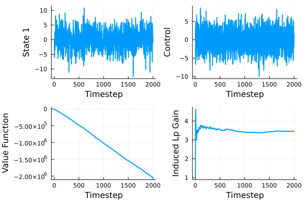

State Feedback: Double Intergrator with Unknown Sign
This recreates the controller from A. Rantzer, “Minimax adaptive control for a finite set of linear systems,” in Proc. 3th Annu. Learning Dyn. Control Conf., vol. 144, Jun. 07 – 08 2021, pp. 893–904. See the arXiv version.
We consider a discrete-time double integrator with unknown input direction
\[ \begin{aligned} x_{t+1} & = \begin{bmatrix} 2 & -1 & -1 \\ 1 & 0 & 0 \\ 0 & 0 & 0 \end{bmatrix} + x_t \pm \begin{bmatrix} 0 \\ 0 \\ 1 \end{bmatrix} u_t + I w_t \end{aligned}\]
Preamble
We load the packages
using MinimaxAdaptiveControl
using LinearAlgebra
using JuMP
using Plots
using Clarabel # Open source SDP solverWe use Clarabel here, but any JuMP compatible SDP solver will do.
Switch this out with whatever optimizer you are using
optimizer_factory = () -> Clarabel.OptimizerSystem definition
We define the system matrices, and the cost function
\[ \sum_{t = 0}^\infty \left( |x_t|^2_Q + |u_t|^2_R - \gamma^2 |w_t|^2 \right),\]
where $Q = I$ and $R = I$.
A0 = [
2.0 -1.0 1.0;
1.0 0.0 0.0;
0.0 0.0 0.0
]
B0 = [0.0; 0.0; 1.0;;]
Q = Matrix(1.0I, 3, 3)
R = Matrix(1.0I, 1, 1)
γ = 19.0
sys1 = SSLinMod(A0, B0, Q, R)
sys2 = SSLinMod(A0, -B0, Q, R)
sys = [sys1, sys2]Reduction to principal problem
We reduce the uncertain system sys to principal model form using reduceSys
models = [Model(optimizer_factory()), Model(optimizer_factory())]
(A, B, G, Ks, Hs) = reduceSys(sys, γ, models)Here we get the matrices
\[A = 0, \quad B = 0, \quad G = I\]
The feedback gains are
\[\begin{aligned} K_1 & = \begin{bmatrix} 1.8 & -1.3 & 1.3 \end{bmatrix} \\ K_2& = \begin{bmatrix} -1.8 & 1.3 & -1.3 \end{bmatrix} \end{aligned}\]
The cost matrices become
\[H_1 = \begin{bmatrix} -1804.0 & 722.0 & -722.0 & 0.0 & 722.0 & 361.0 & 0.0\\ 722.0 & -360.0 & 361.0 & 0.0 & -361.0 & 0.0 & 0.0\\ -722.0 & 361.0 & -360.0 & 0.0 & 361.0 & 0.0 & 0.0\\ 0.0 & 0.0 & 0.0 & -360.0 & 0.0 & 0.0 & 361.0\\ 722.0 & -361.0 & 361.0 & 0.0 & -361.0 & 0.0 & 0.0\\ 361.0 & 0.0 & 0.0 & 0.0 & 0.0 & -361.0 & 0.0\\ 0.0 & 0.0 & 0.0 & 361.0 & 0.0 & 0.0 & -361.0 \end{bmatrix}\]
and
\[H_2 = \begin{bmatrix} -1804.0 & 722.0 & -722.0 & 0.0 & 722.0 & 361.0 & 0.0\\ 722.0 & -360.0 & 361.0 & 0.0 & -361.0 & 0.0 & 0.0\\ -722.0 & 361.0 & -360.0 & 0.0 & 361.0 & 0.0 & 0.0\\ 0.0 & 0.0 & 0.0 & -360.0 & 0.0 & 0.0 & -361.0\\ 722.0 & -361.0 & 361.0 & 0.0 & -361.0 & 0.0 & 0.0\\ 361.0 & 0.0 & 0.0 & 0.0 & 0.0 & -361.0 & 0.0\\ 0.0 & 0.0 & 0.0 & -361.0 & 0.0 & 0.0 & -361.0 \end{bmatrix}\]
They differ only in the elemets on the (4, 7)th and (7, 4)th elements.
Controller synthesis
We first ensure that the associated performance level and feedback gains solves the Bellman inequalities using MACLMIs
model = Model(optimizer_factory())
period = 1
Ps0, Psplus= MACLMIs(A, B, G, Ks, Hs, period, model)and verify the termination status of the optimization routine
julia>
termination_status(model)
OPTIMAL::TerminationStatusCode = 1Next we construct the selection rule and controller objects using getPeriodicSelectionRule and MAController:
selectionRule = getPeriodicSelectionRule(period)
N = length(Hs)
mac = MAController(zeros(3), A, B, G, Ks, Hs, zeros(N), selectionRule)Simulation
We first set up the matrices holding the states, outputs, control signal and disturbances
Tdur = 2000
states = zeros(Tdur + 1, 3)
outputs = zeros(Tdur + 1, 3)
controls = zeros(Tdur, 1)
processDisturbances = randn(Tdur, 3)
measurementDisturbances = zeros(Tdur, 3)We also want to track the time-evolution of the value-function and the empirical $\ell_2$-gain using getValueFunction and InducedlpGain
vfun = getValueFunction(mac, Ps0, N)
dc= InducedlpGain(0.0, 0.0, 0.0, 2)
metrics = [vfun, dc]
metricResults = zeros(Tdur + 1, length(metrics))Next we construct the SSPlant for data generation and simulate!
plant = SSPlant(A0, -B0, zeros(3))
simulate!(states, outputs, controls, processDisturbances, measurementDisturbances, metricResults, metrics, plant, mac, Tdur)and plot the results
plot(
[states[1:Tdur, 1] controls[1:Tdur] metricResults[1:Tdur, :]], layout = (2, 2),
xlabel = "Timestep",
ylabel = ["State 1" "Control" "Value Function" "Induced Lp Gain"],
legend = false,
linewidth = 2
)